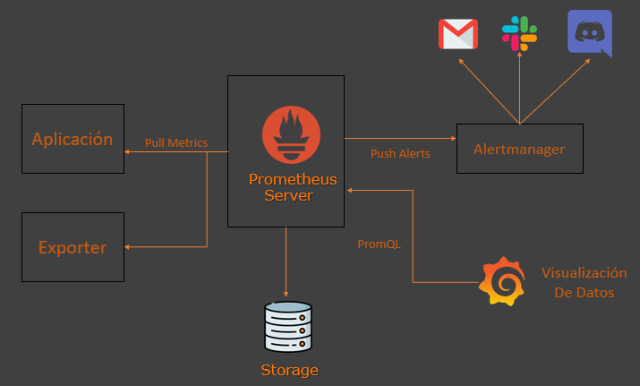

Software y Arquitectura de la Solución
La solución se basa en una arquitectura de contenedores Docker utilizando el stack Prometheus + Grafana. Esto proporciona una potencia y flexibilidad excepcionales para la monitorización en tiempo real.
Arquitectura de Monitoreo
Componentes principales del sistema de monitoreo, implementados como contenedores.
📦
Prometheus
El Motor de Recolección
Recopila métricas, guarda series temporales y permite consultas flexibles.
📊
Grafana
El Panel de Control Visual
Construye paneles, visualiza métricas y crea alertas.
🐳
Docker Compose
Orquestación de Contenedores
Define y ejecuta el *stack* completo de servicios con un solo comando.
Exporters de Sistema y Red
Los *exporters* son agentes ligeros que actúan como "chivatos", exponiendo métricas de un servicio o hardware para que Prometheus las recoja.
-
Node Exporter: Recoge métricas internas del hardware donde está instalado (CPU, RAM, uso de disco, temperatura). En este proyecto, monitoriza la salud de la **Raspberry Pi 4**.
-
Blackbox Exporter: Se utiliza para la monitorización externa. Se encarga de hacer **pings** a los *hosts* externos (Google, GitHub) para medir la **latencia** y la **pérdida de paquetes**, detectando la caída o degradación de la conexión de Chitech.
-
SNMP Exporter: Es clave para el monitoreo de **tráfico individual**. Se configura para interrogar el *router* o *switch* de Chitech y obtener métricas de **ancho de banda (bytes In/Out)** por cada puerto. Esto permite ver el consumo de tráfico de cada dispositivo conectado.
Flujo de Trabajo del Monitoreo
- Exposición: Los agentes (*exporters*) exponen las métricas de rendimiento en una URL.
- Recolección (Scraping): Prometheus consulta periódicamente a cada *exporter* para recoger los datos.
- Almacenamiento: Prometheus guarda las métricas en su base de datos.
- Visualización y Alertas: El personal accede a Grafana, que consulta los datos y los representa en gráficos fáciles de entender.
 Prometheus -> Grafana -> Usuario" class="center-img">